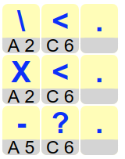
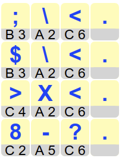

Solution
On commence par la première carte, celle située dans la case A1. Sur cette carte est écrit C2. On place donc en deuxième position la carte de la case C2. Sur cette dernière carte est écrit B3. On place donc en troisième position la carte de la case B3. On continue ainsi de suite jusqu'à la dernière carte, celle de la case E3, qui termine le mot.

On commence en partant de la fin du mot. On place la carte de la case F3. Puis on place à l'avant dernière position une carte sur laquelle est écrit F3. Il n'y en a qu'une seule, c'est la carte qui se trouve dans la case E1.

On continue ainsi de proche en proche. On cherche la carte sur laquelle est écrit E1. C'est la case de la carte B2. On la place sur la troisième position en partant de la fin. Puis on cherche la carte sur laquelle est écrit B2. C'est la case de la carte D2. On la place, puis on cherche la carte sur laquelle est écrit D2. On la place, et le mot est terminé.

On commence en partant de la fin du mot. On place la carte de la case C6, qui termine le mot, puis on essaie de remonter en arrière, en considérant tous les cas lorsqu'il y a plusieurs possibilités.

On cherche une carte sur laquelle est écrit C6. Il y en a deux : la carte de la case A2, et celle de la case A5. Notons ces deux possibilités pour la fin du mot.

On cherche ensuite une carte sur laquelle est écrit A2. Là encore, il y en a deux : la carte de la case B3, et la carte de la case C4. On cherche par ailleurs une carte sur laquelle est écrit A5. Il n'y en a qu'une seule, c'est la carte de la case C2.

On cherche alors les possibilités pour la lettre précédente dans le mot de passe. Il y a deux cartes sur laquelle est écrit B3, ce sont les cartes des cases A1 et C5. Il n'y a qu'une seule carte sur laquelle est écrit C4, c'est la carte de la case A3. Et il n'y a qu'une seule carte sur laquelle est écrit C2, c'est la carte de la case C1.

Reste à placer la dernière carte. On cherche tout d'abord une carte sur laquelle est écrit A1. Mais il n'y en n'a pas. On en déduit qu'il n'y pas de mot de passe incluant la lettre A1, donc on peut laisser tomber la première des quatre possibilités représentées ci-dessus.
En revanche, pour chacune des trois autres possibilités, il y a exactement une carte qui convient. On obtient ainsi la solution suivante.

C'est de l'informatique !
Un ordinateur est équipé d'une mémoire, organisée en première approximation comme une grande grille. Pour trouver une information stockée dans une certaine case, il faut donner les coordonnées de cette case. Certaines cases de la mémoire stockent des informations, comme des nombres ou des lettres, qui ont un sens pour l'utilisateur. Mais il y a également des cases de la mémoire qui stockent les coordonnées d'autres cases de la mémoire. En informatique, on appelle pointeur le contenu de ces cases. Les pointeurs jouent un rôle absolument essentiel pour permettre l'organisation de grandes quantités de données dans la mémoire.